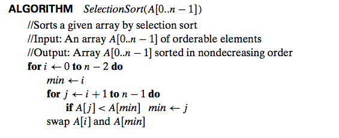
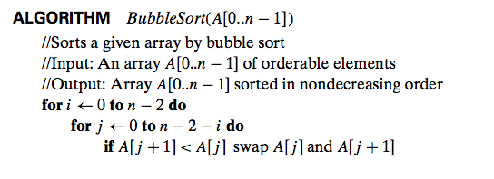
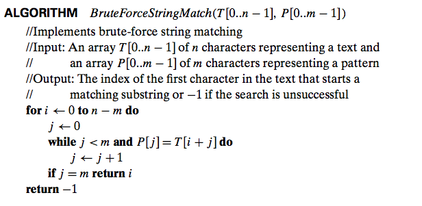
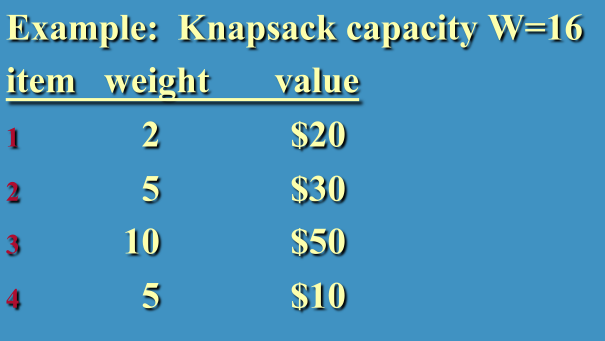
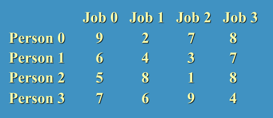
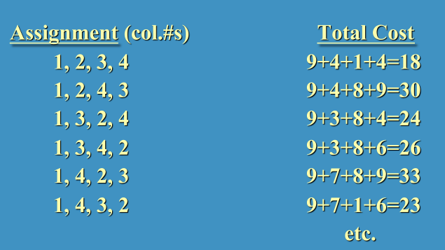

Brute Force Methods 
Straightforward approach to solving the problem. It is as simple as its
names suggests.
> Selection and Bubble sorts


> Finding the minimum/maximum element in a list.
> Pattern matching in a string
> Word
Search

> Computational Geometry - Algorithms that involve geometry
Examples include computer graphics, CAD/CAM, robotics (motion
planning), GIS, geometric
location and search, route planning.
We will assume simple (x,y)
Cartesian coordinates.
Closest Pair - Given a set of N
points, find the two closest points.
The distance between two points Pi = (xi, yi) and Pj = (xj, yj) is the
Euclidean distance
distance(Pi, Pj) = SQRT( (xi - xj)^2 +
(yi - yj)^2 )
Brute force algorithm
to determine the closest pair given a set of N points?
Analysis of this algorithm?
(We really don't need to calculcate the square root. Why not?)
In Python (closest_pair_pt.py)
Convex Hull Problem
The convex hull refers to the natural boundary of a set of points.
Given a set of N points, the convex
hull is the smallest convex polygon that contains all points
(either inside or on the boundary.)
Imagine herding cats - the
idea is to build a fence containing all of the cats.
Some important questions to consider:
Given the set S of points,
- if S contains 2 points, the convex
hull is the _________ connecting these points;
- if S contains 3 points not on the same line, the convex hull is
the _________ connecting these points;
- if S contains 3 points on the same line, the convex hull is the line
segment with its endpoints that are __________ apart.
Brute Force Solution:
First - How do we find a point on the convex hull? (i.e. the starting
vertex for the algorithm.)
<< We will develop a very
high-level algorithm as a class. >>
Detailed Brute Force Algorithm
The straight line through two points (x1, y1), (x2, y2) is defined by
the equation
ax + by = c
where a = y2 - y1, b = x1 - x2, c = x1y2 - y1x2
Such a line divides the plane into 2 half-planes where all the points
in one half are ax + by > c and all the other points ax + by < c.
(What are the points where ax + by = c?)
To check whether certain points lie on the same side of the line, check
whether the expression ax + by - c has the same sign at each of these
points.
<< We will develop a detailed algorithm as a
class. >>
Remaining issue to consider - what if there are multiple points on the
same line? We want to add the point that is furthest on the line using
the distance formula.
Exhaustive Search Problems
Traveling Salesperson
Knapsack Problem
Given n items of known weights W1, W2, ... Wn and values V1, V2, ... Vn
and a knapsack of capacity W. Find the most valuable subset of items
that fits into the knapsack.
Example

Exhaustive solution.
Efficiency? The number of subsets of an n-element set is 2^n or
Ω(2^n)
Assignment Problem
There are N people who need to be assigned to N jobs - one person per
job/one job per person. The cost of assigning person i to job j is
illustrated by cost C[i,j].
The goal is to find an assignment that minimizes the total cost.
Example

Algorithms?
Possible Assignments

Efficiency? There are N! combinations.
|
NP-Hard
Problems
The traveling salesperson, knapsack, and assignment problems are
examples of NP-hard problems
which means no polynomial-time algorithms are known for any problem in
the NP-hard set. We will look at this issue in more detail later this
semester.
|